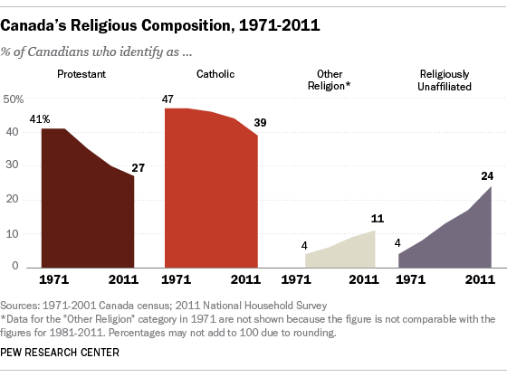
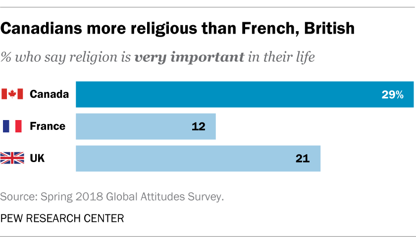

5 facts about religion in Canada
1. More than half of Canaians are Christians, but three-in-ten are unaffiliated

Similar to trends in the United States and Western Europe, a diminishing number of Canadians identify as Christians, while a growing share claim they have no religion. Our most recent Canadian poll, conducted in 2018, discovered that a narrow majority of Canadian citizens (55 percent) identify as Christian, with 29 percent being Catholic and 18 percent being Protestant. Approximately one-third of Canadians identify as atheists (8%), agnostics (5%), or "nothing in particular" (16 percent ). According to Canadian census statistics, the proportion of Canadians who are "religiously unaffiliated" increased from 4% in 1971 to 24% in 2011, with the proportion being lowest in Quebec. Furthermore, as a result of immigration, a growing proportion of Canadians identify with other faiths such as Islam, Hinduism, Sikhism, Judaism, and Buddhism. According to a 2018 Pew Research Center poll, these five groups account for 8% of Canadian adults.
2. Most Canadians say religion’s influence in public life is waning in their country.
According to a 2018 study, approximately two-thirds of Canadian citizens (64 percent) believe religion plays a less vital role in their nation than it did 20 years ago. Indeed, just 12% believe religion has grown in importance in Canadian culture. There is no agreement on whether this is good or bad: 37% of Canadians want a larger role for religion, while 29% disagree and oppose any increased influence of religion in public life. One in every five people has no preference.
3. Canada has low levels of government restrictions on religion,
according to a Pew Research Center research based on data from 2016, the most recent year for which data is available. The country's constitution preserves religious freedom, and the Supreme Court declared in 2006 that a Quebec school could not forbid a Sikh student from carrying a symbolic kirpan (dagger) to school. Sikh males in the Royal Canadian Mounted Police are likewise excused from wearing headgear, allowing them to wear turbans as their faith requires. In 2018, a Quebec court found that a Muslim lady was wrongfully instructed to remove her hijab in court, and that head scarves should be permitted provided they do not impair the public interest.
4. Relatively few Canadians engage frequently in traditional religious practices,

daily prayer or weekly worship, for example. We most recently polled Canadians on these activities in 2013, when one-in-five said they attend religious services at least weekly and 29 percent said they pray every day. A third (36%) said they never pray, and almost half (48%) said they rarely (24%) or never (25%) attend church or other worship events. Nonetheless, in the Center's 2018 survey, more than half of all Canadians (55 percent) said religion is still at least somewhat important in their lives, with about three-in-ten (29 percent) saying it is very important to them – a higher proportion than in the UK, France, and most other Western European countries. According to all of these indicators, young Canadian adults are less religious than their elders.
5. Two-thirds of Canadians (67%) say it is not necessary to believe in God in order to be moral and have good values.
This number has been substantially consistent throughout three Pew Research Center polls conducted in 2002, 2007, and 2013. About three-tenths of Canadians disagree, believing that believe in God is necessary for having decent values.